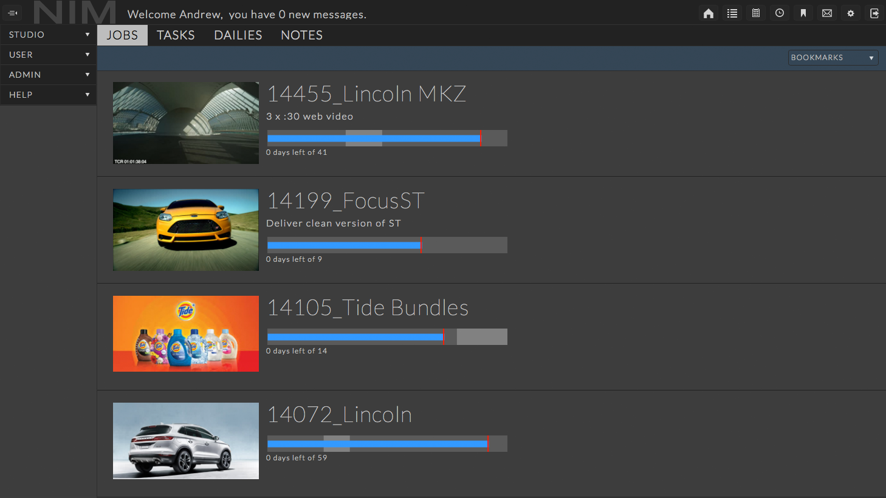
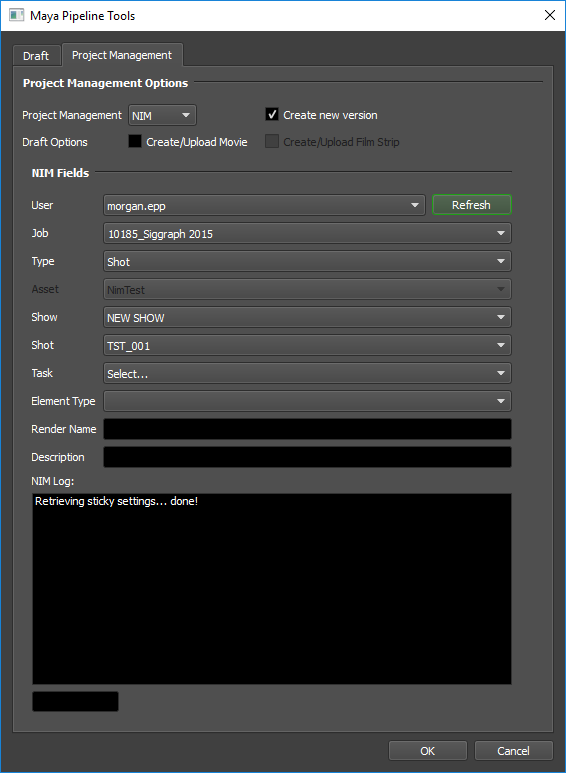
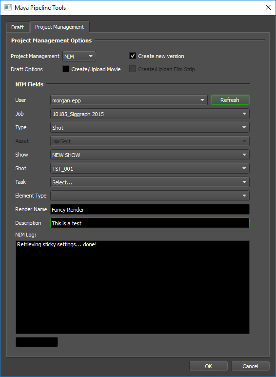
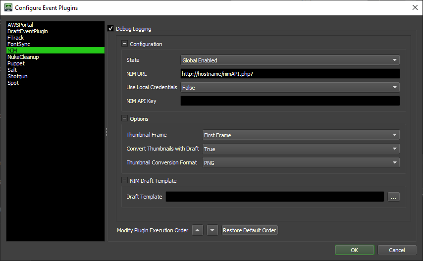
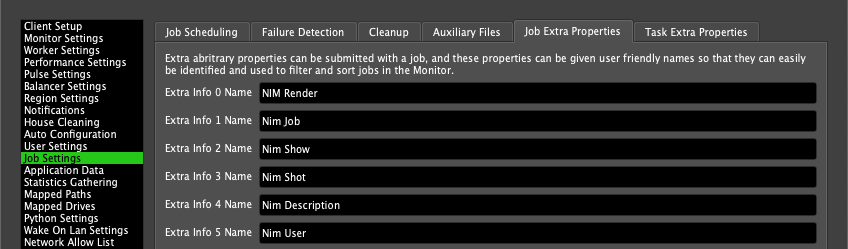

NIM¶
Overview¶
NIM is a browser based management tool created by artists for artists to track the post-production pipeline from start to finish. See the NIM website for more information.
Creating Renders¶
Renders can either be created automatically on submission (using the NIM Event Plugin), or done manually afterwards.
Automatic Render Creation¶
When you submit a new job to Deadline, you can have Deadline automatically create a new Render in NIM. This is done by connection to NIM during the submission process, and selecting the Task to which the Job should be tied to. Currently, only the submission scripts for After Effects, Cinema 4D, Maya, and Nuke include the NIM connection option, and other applications will be added when NIM supports them.
For this example, we will use Maya, but the process is basically the same for each submission script.
First, open the Pipeline Tools window via the Pipeline Tools button and navigate to the Project Management tab.

Choose NIM from the Project Management drop down, check the “Create new version” checkbox, and then press the Refresh button to begin. The browser pulls the NIM connection settings from your NIM preferences file, but you can change the user, job, type, etc, as necessary.
After you have selected a Task, you must specify a Render Name and a Description.
After you have configured the Render information, press OK to return to the Maya submitter. The NIM settings will now contain the information you just specified. To include this information with the job, leave the Create New Version option enabled. If you want to change the Render name or description before submitting, you must first reconnect to NIM in the Pipeline Tools window.
Press the Submit Job button in the Maya submitter to finish the submission. When the job completes, the new Render will be created in NIM.
Manual Render Creation¶
You can also create a Render and tie it to a Job after submission, from the Deadline Monitor. To do this, simply right-click on the job and select ‘Scripts’ -> ‘Integration’ -> ‘Create NIM Render’. This will bring up a NIM browser so that you can connect, pick the appropriate task, and set a description. After specifying the required information, just press OK and the new Render should be created.
Setup¶
In order to be able to create NIM Renders within Deadline, you must first follow the steps below to setup Deadline’s connection to NIM.
NIM Setup¶
You must already have NIM set up on your machine with one of its supported applications, see https://nim-labs.com/docs/NIM/html/connector_overview.html for more details. Once you have installed NIM to be used with one of its supported applications, no additional setup is required to use it for Deadline. The Deadline NIM browser will simply pull all information from your NIM preferences file.
Configure Deadline¶
You must configure Deadline’s NIM event plugin so that it can connect to NIM. To perform this setup, you need to enter Power User Mode (from the Tools menu), and then select ‘Tools’ -> ‘Configure Events’. Once in the Event Plugin Configuration window, select ‘NIM’ from the list on the left.
This is where you will configure all the NIM relevant settings in Deadline. There are several different categories of settings you can configure; they are described in more detail below.
Configuration
This section contains fields required for NIM integration to work.
State: There are three different states that an Event Plugin can be in: Global Enabled, Opt-In, and Disabled. In order for this feature to function properly, the State must be set to either Global Enabled or Opt-In. Note that if this plugin is in the Opt-In state, the jobs that want to run this plugin must opt into NIM.
NIM URL: The URL to access NIM’s API. Simply replace hostname in the screenshot with the host name or IP address of your actual NIM server.
The Use Local Credentials and NIM API Key options are only relevant if your NIM Server is configured to require API Keys (see https://nim-labs.com/docs/NIM/html/api_web.html#api-keys). If your NIM server is not configured to require API keys, you may ignore these fields.
Use Local Credentials: If set to True, use the NIM API Key stored in your nim.key file (
~/.nim/nim.keyon Linux and macOS or%USERPROFILE%\.nim\nim.keyon Windows). The nim.key file must be present on every worker if you are using this option. If set to False, the NIM API Key entered into the ‘NIM API Key’ field will be used. We recommend using local credentials. To create a nim.key file, see the ‘Creating a nim.key file’ section below.NIM API Key: The Render API key to use (located in NIM under Admin > Security > OPTIONS > API KEYS > RENDER API KEY). (Required if Use Local Credentials is set to False). If using the Deadline Secrets Management feature, this parameter will be saved and retrieved based on the Event Plugin Secrets Access Level.
Options
This section contains general high-level options that control the behaviour of the Deadline’s NIM integration.
Auto Connect: Whether or not to connect to NIM when the pipeline tools dialog finishes loading.
Thumbnail Frame: The frame to upload to NIM as a thumbnail.
Convert Thumbnails with Draft: Whether or not to convert the frames to a different format before uploading them to NIM (requires Draft).
Thumbnail Conversion Format: The format to which Draft will convert the Thumbnail before uploading it.
Nim Draft Template
Draft Template: The default Draft Template when selecting ‘Use Project Management Data’ with NIM when submitting a Custom Draft job.
Creating a nim.key file¶
If the ‘Use Local Credentials’ configuration setting is set to True, the API Key will be read from your nim.key file (~/.nim/nim.key on Linux and macOS or %USERPROFILE%\.nim\nim.key on Windows).
If you do not have a nim.key file in your .nim folder (~/.nim on Linux and macOS or %USERPROFILE%\.nim on Windows), you can create one by copying the Render API Key from NIM (located in NIM under Admin > Security > OPTIONS > API KEYS > RENDER API KEY) to a file called nim.key and saving that file to your .nim folder (~/.nim on Linux and macOS or %USERPROFILE%\.nim on Windows).
Rename ExtraInfo Columns¶
The NIM integration uses ExtraInfo columns 0-5 to display relevant information about the NIM Renders that are tied to Deadline Jobs. Given that “ExtraInfo0” isn’t exactly a descriptive name for what that column is being used for in this context, many people find it useful to rename these columns to be more descriptive.
To do so, you must be in Power User mode and select ‘Tools’ -> ‘Repository Options’. You must then go to the ‘Job Settings’ section, and select the ‘Extra Properties’ tab; from here you’ll be able to change these column names to something more appropriate.
Error Messages and Meanings¶
This is a collection of known NIM error messages and their meanings, as well as possible solutions. We want to keep this list as up to date as possible, so if you run into an error message that isn’t listed here, please contact Deadline Support and let us know.
Currently, no error messages have been reported for this event plugin.

{kind=link}
{kind=link}
{kind=link}
{kind=link}
{kind=link}
{kind=link}
{kind=link}